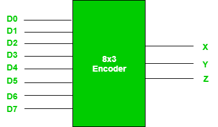
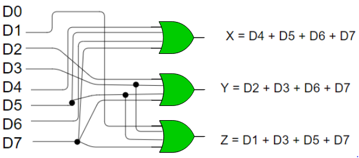
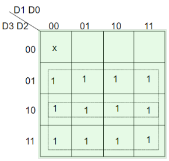
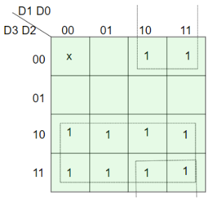
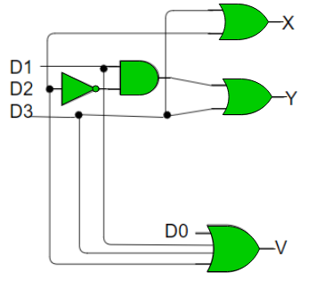
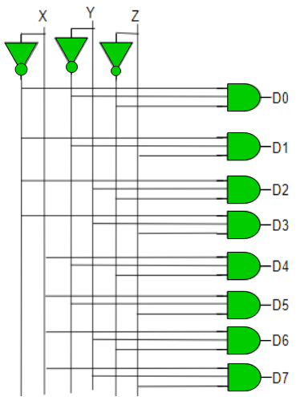

N位的二进制代码可用于存储编码信息的2 N个不同元素。 这就是编码器和解码器的用途。 编码器将2 N行输入转换为N位代码， 解码器将N位解码为2 N行。
1.编码器 -
编码器是一种组合电路，它将2 N输入线形式的二进制信息转换为N条输出线，表示输入的N位代码。 对于简单编码器，假设一次只有一个输入线是活动的。
举个例子，让我们考虑八进制到二进制编码器。 如下图所示，八进制到二进制编码器需要8条输入线并产生3条输出线。

真相表 -
| D7 | D6 | D5 | D4 | D3 | D2 | D1 | D0 | X | ÿ | ž |
|---|---|---|---|---|---|---|---|---|---|---|
| 0 | 0 | 0 | 0 | 0 | 0 | 0 | 1 | 0 | 0 | 0 |
| 0 | 0 | 0 | 0 | 0 | 0 | 1 | 0 | 0 | 0 | 1 |
| 0 | 0 | 0 | 0 | 0 | 1 | 0 | 0 | 0 | 1 | 0 |
| 0 | 0 | 0 | 0 | 1 | 0 | 0 | 0 | 0 | 1 | 1 |
| 0 | 0 | 0 | 1 | 0 | 0 | 0 | 0 | 1 | 0 | 0 |
| 0 | 0 | 1 | 0 | 0 | 0 | 0 | 0 | 1 | 0 | 1 |
| 0 | 1 | 0 | 0 | 0 | 0 | 0 | 0 | 1 | 1 | 0 |
| 1 | 0 | 0 | 0 | 0 | 0 | 0 | 0 | 1 | 1 | 1 |
从真值表中可以看出，当D0有效时输出为000; D1有效时为001; 当D2处于活动状态时为010，依此类推。
实施 -
从真值表中，当输入八进制数字为1,3,5或7时，输出行Z有效。类似地，当输入八进制数字为2,3,6或7且输入八进制数字X为1时，Y为1 4,5,6或7.因此，布尔函数将是：
X = D4 + D5 + D6 + D7 Y = D2 +D3 + D6 + D7 Z = D1 + D3 + D5 + D7
因此，编码器可以用OR门实现，如下所示：

该编码器的一个限制是在任何给定时间只能有一个输入有效。 如果多个输入处于活动状态，则输出未定义。 例如，如果D6和D3都是活动的，那么，我们的输出将是111，这是D7的输出。 为了解决这个问题，我们使用优先级编码器。
当所有输入都为0时，会出现另一个模糊。在这种情况下，编码器输出000实际上是D0有效的输出。 为了避免这种情况，可以在输出中添加一个额外的位，称为有效位，当所有输入为0时为0，否则为1。
优先编码器 -
优先级编码器是一种编码器电路，其中输入被赋予优先级。 当多个输入同时处于活动状态时，优先级较高的输入优先，并生成与之对应的输出。
我们以4到2优先级编码器为例。
从真值表中，我们看到当所有输入都为0时，我们的V位或有效位为零，并且不使用输出。 表中的x表示不关心条件，即它可以是0或1.这里，D3具有最高优先级，因此，无论其他输入是什么，当D3为高时，输出必须为11。 D0具有最低优先级，因此仅当D0为高电平且其他输入线为低电平时，输出才为00。 类似地，D2具有比D1和D0更高的优先级但低于D3，因此仅当D2为高且D3为低（D0和D1不关心）时输出将为010。
真相表 -
| D3 | D2 | D1 | D0 | X | ÿ | V |
|---|---|---|---|---|---|---|
| 0 | 0 | 0 | 0 | X | X | 0 |
| 0 | 0 | 0 | 1 | 0 | 0 | 1 |
| 0 | 0 | 1 | X | 0 | 1 | 1 |
| 0 | 1 | X | X | 1 | 0 | 1 |
| 1 | X | X | X | 1 | 1 | 1 |
实施 -
可以清楚地看出，有效位为1的条件是至少任何一个输入应该是高的。 因此，
V = D0 + D1 + D2 + D3 对于X：

=> X = D2 + D3
对于Y：

=> Y = D1 D2'+ D3
因此，优先级4到2编码器可以如下实现：

2.解码器 -
解码器完成编码器的相反工作。 它是一个组合电路，可将n行输入转换为2 n行输出。
我们来看一个3到8线解码器的例子。
真相表 -
| X | ÿ | ž | D0 | D1 | D2 | D3 | D4 | D5 | D6 | D7 |
|---|---|---|---|---|---|---|---|---|---|---|
| 0 | 0 | 0 | 1 | 0 | 0 | 0 | 0 | 0 | 0 | 0 |
| 0 | 0 | 1 | 0 | 1 | 0 | 0 | 0 | 0 | 0 | 0 |
| 0 | 1 | 0 | 0 | 0 | 1 | 0 | 0 | 0 | 0 | 0 |
| 0 | 1 | 1 | 0 | 0 | 0 | 1 | 0 | 0 | 0 | 0 |
| 1 | 0 | 0 | 0 | 0 | 0 | 0 | 1 | 0 | 0 | 0 |
| 1 | 0 | 1 | 0 | 0 | 0 | 0 | 0 | 1 | 0 | 0 |
| 1 | 1 | 0 | 0 | 0 | 0 | 0 | 0 | 0 | 1 | 0 |
| 1 | 1 | 1 | 0 | 0 | 0 | 0 | 0 | 0 | 0 | 1 |
实施 -
当X = 0，Y = 0且Z = 0时，D0为高。因此，
D0 = X' Y' Z' 与之相似，
D1 = X' Y' Z D2 = X' Y Z' D3 = X' YZ D4 = X Y' Z' D5 = X Y' Z D6 = XY Z' D7 = XYZ
因此，
